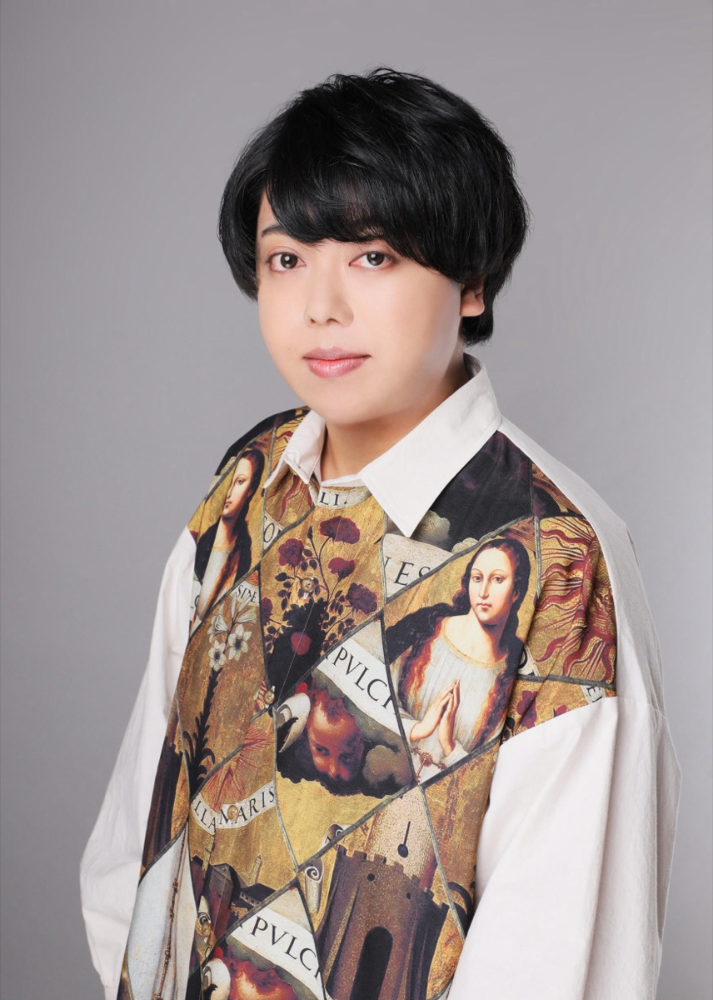

占い処 六根清浄 代表
長谷川 貴紀
hasegawa atsuki
四柱推命を、人生の判断材料として。

六根清浄の鑑定は、当てて驚かせるためのものではなく、迷っている選択を決められる状態まで整理する時間です。
どこで出会うか。複数の候補から、誰を・どれを選ぶか。いつ動いて、いつ待つか。四柱推命を軸に、必要に応じて紫微斗数・易・九星気学・タロット・オーラ視を補助として使い、複数の角度から確認します。
鑑定の原点
なぜ四柱推命なのか
自分の人生で、実際に使ってきた道具だから。
私自身、転職も、引っ越しも、人間関係の距離の取り方も、四柱推命を判断材料にして決めてきました。
「信じているから使う」というより、迷ったときに何を基準に比べればよいかを与えてくれる道具として、いちばん実用的だったからです。
占いに「すがる」のではなく、「使う」。自分の人生で役に立ったものだからこそ、同じように迷っている方へお渡ししたい。それが六根清浄の原点です。
経歴
活動履歴
占い館・チャット占いでの活動を含め、これまでに500件以上の相談を受けてきました。「どう動けばよいか分からない」という相談が中心です。
-
修行期
師のもとで四柱推命を中心に学ぶ。紫微斗数・易・九星気学・タロットなどを併せて修め、自分自身の転職や引っ越しの判断にも使い始める。占い歴は通算7年。
-
占い館時代（名古屋・栄）
名古屋・栄の占い館に在籍し、対面鑑定の経験を積む。恋愛・出会い・仕事・家族と幅広い相談を担当。
-
チャット占い時代
チャット占いサービスで文章での鑑定を多数担当。限られた時間で要点を整理して返す、現在の鑑定スタイルの土台がここで固まる。
-
独立・現在
独立し「占い処 六根清浄」を設立。オンラインと対面（名古屋・栄）で鑑定を行っている。
※ 相談件数は、占い館・チャット占い在籍時代を含む通算です。
相談のテーマ
得意な相談
多いのは、「どう動けばよいか分からない」という相談です。
選択肢と時期に分解して、整理していきます。
- 出会い・恋愛
- 自分に合った出会い方・縁が生まれやすい場所／複数の候補の比較／連絡・告白の時期／復縁の進め方の整理
- 仕事
- 転職先AとBの比較／残る・転職する・独立するの整理／向いている働き方／動く時期・準備の時期
- 人生・家族
- 引っ越し先の比較／家族やパートナーとの距離感の取り方／重要な話し合い・決断の時期
- 時期の見極め
- 今動くか、半年待つか／準備や観察に回す時期の過ごし方／重要な予定を置く時期の整理
鑑定の姿勢
鑑定で約束していること
-
未来を断定しません。
「必ずこうなる」という言い方はしません。傾向と可能性を、根拠と一緒にお伝えします。
-
不安をあおりません。
良くない時期の話をするときは、その時期の過ごし方まで必ずセットでお伝えします。
-
決めるのはあなたです。
こちらの役割は、決められる状態まで判断材料を揃えることです。
-
専門領域には踏み込みません。
医療・法律・投資など、専門家が担うべき判断は扱いません。
屋号の由来
六根清浄という屋号
六根清浄（ろっこんしょうじょう）は仏教の言葉で、「六つの感覚を清め、心のノイズを消して本質を見る」という意味です。
迷っているときほど、情報も感情も、ノイズが多くなる。だからこそ、静かな場所でひとつずつ整理する時間が要る。
屋号には、そういう鑑定の場でありたいという意味を込めています。
現在はオンラインと対面（名古屋・栄周辺）で鑑定を行っています。
※ 東枇杷島に事務所を準備中です。
友達に話すと「考えすぎ」で終わる。
でも、決めなければいけないことがある。
テーマをひとつ、30分で整理しませんか。
予約は 予約フォーム から
空きのある日時から選んで送信するだけ
※「料金・予約方法」は料金案内へ